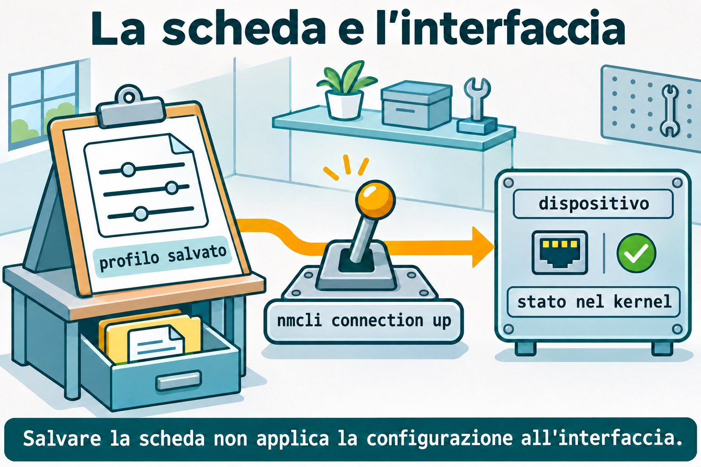
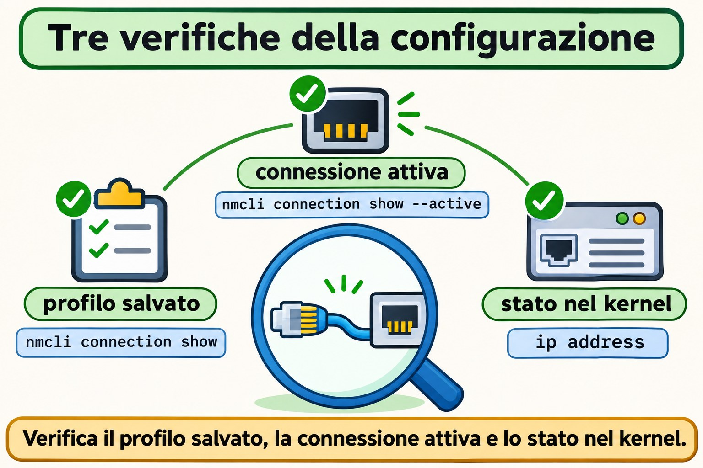

Lezione 11.2 · NetworkManager e nmcli
Su Windows Server distingui la scheda dalla configurazione che le viene applicata. Su Linux con NetworkManager, questa distinzione si presenta come dispositivo e profilo di connessione. Nella Lezione 11.1 hai letto indirizzi, prefissi e rotte; ora salverai una configurazione, la attiverai e verificherai cosa rimane dopo il reboot. Svolgerai lo stesso esercizio su Rocky e Debian, senza migrare l'interfaccia usata da SSH.
Il cuore di questa lezione: il dispositivo è l'interfaccia; il profilo è la configurazione salvata; attivarlo applica il profilo al dispositivo. Salvare, caricare e applicare sono operazioni diverse. Il resto è approfondimento.
| Scheda | |
|---|---|
| Modulo | M11 · Rete, lezione 2 di 5 |
| Quando | Settimana 16 |
| Alla fine | Crei un profilo persistente, configuri IPv4 e IPv6, distingui il DNS salvato da quello in uso e riconosci un keyfile |
| Prerequisiti | Lezione 11.1; accesso SSH, sudo e console noVNC delle VM 201 e 202 |
| Durata | Circa 90 minuti, più 30 minuti per ripetere senza consultare |
| Snapshot | m11a2-inicio e m11a2-fim su entrambe le VM |
1 · Riscaldamento
Rispondi prima di aprire il terminale. Controlla le soluzioni alla fine.
- Cosa indica
/26in un indirizzo IPv4? ip route getverifica la consegna di un pacchetto o consulta una decisione locale?- Un servizio su
127.0.0.1diventa disponibile alle altre macchine solo perché la VM ha un IP sulla rete?
2 · Perché conta
Ti viene affidato un server che ieri funzionava. Qualcuno ha aggiunto un indirizzo con ip address add; dopo il reboot, è scomparso. Un'altra persona ha modificato un file di connessione e si aspettava che l'interfaccia cambiasse immediatamente. In entrambi i casi, mancava la distinzione tra stato attuale e configurazione persistente.
| Cosa osservi | Dove controllare | Cosa dimostra |
|---|---|---|
| Indirizzo attuale | ip address | Cosa usa il kernel adesso |
| Profilo salvato | nmcli connection show | La configurazione nota a NetworkManager |
| Profilo attivo | nmcli connection show --active | Quale configurazione è applicata |
| File persistente | Keyfile su disco | Cosa potrà caricare di nuovo il servizio |
Il tuo lavoro termina quando la configurazione attesa è in uso e torna dopo il reboot. La sola presenza di un file non conclude questa verifica.
3 · Modello mentale
Pensa a una stanza con una scheda di installazione. La stanza è il dispositivo. La scheda indica quale indirizzo, quali rotte e quali server DNS usare. Conservare una scheda nell'archivio non cambia la stanza; qualcuno deve eseguire l'installazione descritta.
keyfile su disco → profilo caricato → attivazione → dispositivo → stato nel kernel
salvare caricare applicare verificare con ipPuoi conservare più profili per un'interfaccia. Nell'esercizio ci sarà un profilo attivo e un altro usato soltanto per pianificare. Il nome del profilo ti aiuta a riconoscerlo; l'UUID identifica quella configurazione indipendentemente dal nome.


Ponte Windows
| Windows Server | NetworkManager | Concetto che riutilizzi |
|---|---|---|
| Scheda di rete | Dispositivo in nmcli device | L'interfaccia che riceve la configurazione |
| Configurazione IP della scheda | Profilo in nmcli connection | Indirizzo, rotte e DNS come insieme |
| Consultare l'IP attuale | ip -br address | Controllare lo stato effettivo |
| Configurazione persistente | Profilo salvato su disco | Riapplicare dopo il boot |
| Server DNS della scheda | Proprietà ipv4.dns e ipv6.dns | La risoluzione ha una configurazione propria |
Il profilo di connessione di NetworkManager non è il profilo firewall Pubblico o Privato di Windows. Qui descrive come configurare l'interfaccia.
4 · L'essenziale
Dispositivo e connessione non sono sinonimi
nmcli device status elenca le interfacce e lo stato di gestione. nmcli connection show elenca i profili. Un profilo può esistere senza essere attivo; un'interfaccia può esistere senza essere gestita da NetworkManager.
nmcli device status
nmcli connection show
nmcli connection show --activeSu Rocky, NetworkManager è il gestore previsto. Su Debian, scopri prima chi amministra l'interfaccia reale. La Lezione 11.3 tratta ifupdown, NetworkManager e systemd-networkd; installare un altro gestore non significa affidargli la scheda.
Salvare, caricare e applicare
| Operazione | Comando | Effetto |
|---|---|---|
| Creare un profilo | nmcli connection add | Salva una nuova configurazione |
| Modificare un profilo | nmcli connection modify | Aggiorna le proprietà salvate |
| Ricaricare i file | nmcli connection reload | Rilegge i profili dal disco |
| Caricare un file | nmcli connection load ARQUIVO | Legge quel keyfile |
| Attivare un profilo | nmcli connection up PERFIL | Applica la configurazione |
| Riapplicare modifiche compatibili | nmcli device reapply INTERFACE | Aggiorna la connessione già attiva |
modify non equivale a up. Dopo aver modificato un profilo attivo, controlla lo stato effettivo; per questo lab, riattiva soltanto il profilo dell'interfaccia interna. Riattivare la scheda di SSH può interrompere il tuo accesso.
IPv4 statico significa indirizzo con prefisso
ipv4.method manual usa gli indirizzi indicati in ipv4.addresses. ipv4.method auto richiede una configurazione automatica, normalmente tramite DHCP su Ethernet. Non usare mai shared in questo esercizio: questa modalità condivide la connettività e non rappresenta un normale client DHCP.
Un profilo interno non richiede un gateway. Configura ipv4.never-default yes per evitare che diventi un candidato per la rotta predefinita IPv4. La stessa distinzione esiste per IPv6.
IPv6 ha una configurazione propria
| Proprietà | Concetto |
|---|---|
ipv6.method auto | Configurazione automatica IPv6 |
ipv6.method manual | Indirizzi IPv6 indicati nel profilo |
ipv6.addresses | Indirizzo con prefisso IPv6 |
ipv6.gateway | Prossimo salto predefinito IPv6 |
ipv6.never-default yes | Impedisce una rotta predefinita tramite questo profilo |
Sull'interfaccia interna userai 2001:db8:11::10/64. Questo prefisso è riservato alla documentazione e rimarrà soltanto nella VM, senza bridge, cavo o annunci verso la rete del corso. Non installarlo sull'interfaccia Ethernet reale.
DNS salvato non significa query riuscita
ipv4.dns e ipv6.dns memorizzano gli indirizzi dei server DNS. Con il metodo automatico, ignore-auto-dns yes scarta i server ricevuti automaticamente per quella famiglia. Questo non crea un server DNS e non dimostra che risponda.
Il sistema riunisce le informazioni DNS delle connessioni attive secondo la propria configurazione. Per osservare i dati dell'interfaccia, usa nmcli device show. L'integrazione con resolv.conf sarà approfondita nella Lezione 11.4.
Nel lab salverai il DNS in un profilo inattivo. Non lo attiverai: gli indirizzi di esempio non rispondono alle query e non devono entrare nella risoluzione usata dal sistema.


Keyfile e permessi
I profili in formato keyfile usano sezioni come [connection], [ipv4] e [ipv6]. La directory di configurazione persistente è /etc/NetworkManager/system-connections/; i file in /run/NetworkManager/system-connections/ sono temporanei.
Un keyfile può contenere segreti. Usa proprietario root:root e modalità 600. NetworkManager rifiuta i file con accesso non consentito ad altri utenti. Preferisci nmcli per le modifiche comuni; dopo aver modificato direttamente un file, caricalo e attiva il profilo quando è il momento di applicarlo.
Rocky × Debian
| Voce | Rocky 9, VM 201 | Debian 13, VM 202 |
|---|---|---|
| Nome e accesso | rocky-lab, ssh rocky-lab | debian-lab, ssh debian-lab |
| IP reale del corso | 10.1.0.51 | 10.1.0.52 |
| Pacchetto | NetworkManager | network-manager |
| Unità | NetworkManager.service | NetworkManager.service |
| Interfaccia reale | Normalmente gestita da NetworkManager | Identifica il gestore prima di modificarla |
| Esercizio di questa lezione | Profilo dummy interno | Stesso profilo, con preparazione isolata se necessaria |
| Keyfile persistente | /etc/NetworkManager/system-connections/ | Stessa directory |
5 · Lab guidato
Ripeti la sequenza su Rocky e Debian come student. Usa una sessione Bash per VM per mantenere le variabili dell'esercizio. I profili iniziano con m11a2-; l'unica interfaccia modificata sarà m11dummy0, che non è collegata alla rete esterna.
Prima di modificare qualsiasi configurazione di rete: apri la console noVNC e verifica di poter accedere come student e usare sudo. Le modifiche alla scheda usata da SSH richiedono questa console o un piano di ripristino collaudato. Questo lab non modifica l'IP, il gateway o il profilo della scheda reale.
Passo 0 · Salvare il punto di ripristino. Sul nodo Proxmox che ospita ogni VM:
Ipotesi: uno snapshot sullo stesso storage ti protegge dalla perdita di quello storage?
qm snapshot 201 m11a2-inicio
qm snapshot 202 m11a2-inicio
qm listsnapshot 201
qm listsnapshot 202Output atteso: gli elenchi contengono m11a2-inicio.
Verifica: controlla entrambe le VM prima di continuare. Lo snapshot è un punto di ripristino del lab, non un sostituto del backup.
Passo 1 · Registrare la rete e il gestore. All'interno di ogni VM:
Ipotesi: installare nmcli dimostra che NetworkManager amministra già la tua scheda?
test ! -e "$HOME/m11a2" && mkdir -m 0700 "$HOME/m11a2"
ip -br address | tee "$HOME/m11a2/enderecos-inicio.txt"
ip -4 route | tee "$HOME/m11a2/rotas-inicio.txt"
systemctl is-active NetworkManager.service
systemctl is-enabled NetworkManager.service
systemctl is-active networking.service systemd-networkd.serviceOutput atteso: la rete reale e lo stato delle unità. Un'unità assente può risultare not-found; un servizio inattivo non significa che tutta la rete sia guasta.
Verifica: se la cartella esiste già, fermati per non mescolare tentativi diversi. Registra chi gestisce la scheda del corso. Non arrestare quel gestore.
Passo 2 · Preparare NetworkManager senza affidargli la scheda reale. Su Rocky il servizio deve essere attivo; controlla nmcli --version e passa al Passo 3. Anche su Debian con il servizio già attivo, passa al Passo 3.
Ipotesi: due gestori che cercano di configurare la stessa scheda rendono la diagnosi più semplice o più difficile?
Su Debian senza NetworkManager attivo, usa la preparazione seguente soltanto se è assente o disabilitato. Se è mascherato, in errore oppure abilitato ma fermo, indaga su questa condizione prima di continuare.
if test -e /etc/NetworkManager/conf.d/99-m11a2-isolado.conf; then
printf 'Existing lab configuration; stop here.\n'
else
sudo install -d -m 0755 /etc/NetworkManager/conf.d
sudo tee /etc/NetworkManager/conf.d/99-m11a2-isolado.conf > /dev/null <<'EOF'
[main]
dns=none
[keyfile]
unmanaged-devices=*,except:interface-name:m11dummy0
EOF
sudo apt update
sudo apt install -y network-manager
sudo systemctl start NetworkManager.service
printf 'debian-isolado\n' > "$HOME/m11a2/preparacao"
fiOutput atteso: NetworkManager si avvia lasciando fuori dalla propria gestione tutte le interfacce tranne m11dummy0; dns=none gli impedisce di modificare la risoluzione del sistema in questa preparazione.
Verifica: fermati se il controllo iniziale indica che il file esiste già. Controlla nmcli device status, ip -br address e ip -4 route: la scheda reale mantiene la propria configurazione e risulta non gestita da NetworkManager in questa preparazione. Non hai migrato ifupdown né systemd-networkd.
Passo 3 · Identificare i due elenchi. Su entrambe le VM, con NetworkManager attivo:
Ipotesi: un profilo senza dispositivo nell'elenco ha smesso di esistere?
nmcli --version
nmcli device status
nmcli -f NAME,UUID,TYPE,DEVICE connection show
nmcli connection show --active
ip link show m11dummy0Output atteso: profili e dispositivi reali; l'ultimo comando indica che m11dummy0 non esiste ancora.
Verifica: controlla che non esista un profilo chiamato m11a2-interno o m11a2-plano. Se una di queste risorse esiste già, fermati e identifica il tentativo precedente.
Passo 4 · Creare IPv4 e IPv6 statici sull'interfaccia interna.
Ipotesi: senza gateway nel profilo, i due indirizzi locali smetteranno di esistere?
sudo nmcli connection add type dummy ifname m11dummy0 \
con-name m11a2-interno connection.autoconnect no \
ipv4.method manual ipv4.addresses 192.0.2.10/24 \
ipv4.never-default yes ipv6.method manual \
ipv6.addresses 2001:db8:11::10/64 ipv6.never-default yes
nmcli -f connection.id,connection.interface-name,connection.autoconnect,ipv4,ipv6 \
connection show m11a2-interno
sudo nmcli connection up m11a2-internoOutput atteso: il profilo viene salvato e attivato; NetworkManager crea l'interfaccia dummy con gli indirizzi indicati.
Verifica: ip -br address show dev m11dummy0 mostra IPv4 e IPv6. Se IPv6 è disattivato nel kernel, registra la condizione e sistema il prerequisito del lab prima di proseguire; non modificare la politica della VM per tentativi.
Passo 5 · Controllare lo stato effettivamente applicato.
Ipotesi: una rotta connessa dell'interfaccia interna sostituisce la rotta predefinita della scheda reale?
nmcli connection show --active
nmcli -f GENERAL,IP4,IP6 device show m11dummy0
ip -4 route show dev m11dummy0
ip -6 route show dev m11dummy0
ip -4 route show default
ping -4 -c 2 -W 2 192.0.2.10
ping -6 -c 2 -W 2 2001:db8:11::10Output atteso: profilo attivo, indirizzi e rotte interne. I ping ricevono risposte dalla VM stessa.
Verifica: la rotta predefinita IPv4 continua a passare dall'interfaccia originale. Questi ping confermano indirizzi locali; non dimostrano la comunicazione con un altro computer.
Passo 6 · Pianificare il DNS senza pubblicare DNS di esempio.
Ipotesi: compilare ipv4.dns in un profilo inattivo cambia già le query del sistema?
sudo nmcli connection clone m11a2-interno m11a2-plano
sudo nmcli connection modify m11a2-plano connection.autoconnect no \
ipv4.dns 192.0.2.53 ipv4.ignore-auto-dns yes \
ipv6.dns 2001:db8:11::53 ipv6.ignore-auto-dns yes
nmcli -f connection.id,connection.autoconnect,ipv4.dns,ipv4.ignore-auto-dns,ipv6.dns \
connection show m11a2-plano
nmcli connection show --activeOutput atteso: DNS di esempio salvato in m11a2-plano; su questa interfaccia rimane attivo soltanto m11a2-interno.
Verifica: non attivare m11a2-plano. Il clone ha un altro UUID, ma ha ereditato gli indirizzi e l'interfaccia dell'originale. Una clonazione richiede di controllare le proprietà ereditate prima dell'uso.
Passo 7 · Leggere il keyfile creato. Individualo tramite UUID, senza presumere il nome del file:
Ipotesi: rinominare il profilo obbliga l'UUID a cambiare?
PLANO_UUID=$(nmcli -g connection.uuid connection show m11a2-plano)
PLANO_FILE=$(sudo grep -rlF --include='*.nmconnection' "uuid=$PLANO_UUID" /etc/NetworkManager/system-connections/)
printf '%s\n' "$PLANO_FILE"
sudo stat -c '%U:%G %a %n' "$PLANO_FILE"
sudo sed -n '/^\[connection\]/,/^\[/p' "$PLANO_FILE"Output atteso: esattamente un percorso, proprietario root:root e modalità 600. Il frammento mostra la sezione di connessione del profilo.
Verifica: prima di usare il percorso nei guasti, controlla che sia un unico file del profilo m11a2-plano nella directory indicata. Non mostrare i file di altre connessioni: possono contenere segreti.
Passo 8 · Preparare la persistenza.
Ipotesi: connection.autoconnect no impedisce anche un'attivazione manuale?
sudo nmcli connection modify m11a2-interno connection.autoconnect yes
sudo systemctl enable NetworkManager.service
nmcli -g connection.autoconnect connection show m11a2-interno
nmcli -g connection.autoconnect connection show m11a2-planoOutput atteso: yes per il profilo interno e no per quello di pianificazione.
Verifica: servizio al boot e autoconnessione del profilo sono due condizioni distinte. Il reboot verrà eseguito dopo i guasti; non hai ancora dimostrato la persistenza.
Decidi 1
Hai modificato ipv4.addresses nel profilo, ma ip address mostra ancora l'indirizzo precedente. Cosa fai prima?
A) Riavvii l'intera VM. B) Controlli profilo e dispositivo, poi applichi la modifica all'interfaccia corretta. C) Elimini la rotta predefinita.
| Se hai scelto | Risultato | Perché |
|---|---|---|
| A | Prematuro | Puoi applicare e verificare la modifica localmente |
| B | Corretto | Salvare e applicare sono passaggi diversi |
| C | Non pertinente | L'indirizzo salvato non è stato applicato al dispositivo |
Decidi 2
Un Debian usa ifupdown sulla scheda di SSH. Installare NetworkManager autorizza ad attivare un altro profilo su quella scheda?
A) Sì, decide l'ultima installazione. B) Sì, se il nome del profilo è diverso. C) No; prima devi pianificare chi gestisce l'interfaccia e come tornare indietro.
| Se hai scelto | Risultato | Perché |
|---|---|---|
| A | Errato | Installare non è una migrazione pianificata |
| B | Errato | Nomi diversi non isolano lo stesso dispositivo |
| C | Corretto | Il controllo dell'interfaccia e il ripristino devono essere chiari |
6 · Rompi e ripara
Esegui i guasti soltanto su m11dummy0 e sui due profili della lezione. L'interfaccia reale rimane sotto il gestore originale. Se hai aperto un'altra sessione Bash, ricalcola PLANO_UUID e PLANO_FILE seguendo il Passo 7.
Guasto 1 · Hai cambiato la scheda, non l'interfaccia
Ipotesi: il vecchio indirizzo scompare solo perché hai modificato il profilo?
sudo nmcli connection modify m11a2-interno ipv4.addresses 192.0.2.20/24
nmcli -g ipv4.addresses connection show m11a2-interno
ip -4 address show dev m11dummy0Sintomo: il profilo salvato mostra 192.0.2.20/24; l'interfaccia usa ancora 192.0.2.10/24.
Indagine: confronta la proprietà del profilo con l'output di ip. Hai consultato due livelli diversi.
Causa: connection modify ha salvato la modifica senza riattivare la connessione in uso.
Riparazione: applica soltanto il profilo interno e poi ripristina il suo indirizzo iniziale:
sudo nmcli connection up m11a2-interno
ip -4 address show dev m11dummy0
sudo nmcli connection modify m11a2-interno ipv4.addresses 192.0.2.10/24
sudo nmcli connection up m11a2-internoVerifica: la prima attivazione imposta .20; la seconda ripristina .10. IPv6 rimane configurato.
Prevenzione: quando registri una modifica, annota il profilo salvato e la verifica dello stato applicato.
Guasto 2 · Funziona a mano, non torna da solo
Ipotesi: un profilo con autoconnessione disattivata può funzionare quando richiedi up?
sudo nmcli connection modify m11a2-interno connection.autoconnect no
sudo nmcli connection down m11a2-interno
nmcli connection show --active
sudo nmcli connection up m11a2-interno
nmcli -g connection.autoconnect connection show m11a2-internoSintomo: l'attivazione manuale funziona, ma la proprietà rimane no.
Indagine: controlla la connessione attiva e connection.autoconnect. Essere attivo adesso non dimostra l'attivazione automatica al prossimo boot.
Causa: hai autorizzato l'attivazione manuale senza autorizzare l'autoconnessione del profilo.
Riparazione: sudo nmcli connection modify m11a2-interno connection.autoconnect yes.
Verifica: la proprietà torna a yes; nella chiusura, il reboot confermerà il risultato.
Prevenzione: controlla l'unità abilitata e l'autoconnessione del profilo prima del test di persistenza.
Guasto 3 · Il file esiste, ma viene rifiutato
Ipotesi: un keyfile leggibile da qualsiasi utente viene accettato perché si trova nella directory corretta?
sudo chmod 0644 "$PLANO_FILE"
sudo nmcli connection load "$PLANO_FILE"
sudo stat -c '%U:%G %a %n' "$PLANO_FILE"
sudo journalctl -u NetworkManager.service -n 20 --no-pagerSintomo: il caricamento esplicito fallisce; il file mostra modalità 644. Il messaggio segnala il rifiuto del file, con dettagli nei messaggi del servizio.
Indagine: controlla il percorso, il proprietario e i permessi. Il profilo già caricato può rimanere elencato; questo non dimostra che la nuova lettura sia stata accettata.
Causa: altri utenti possono leggere il keyfile, in contrasto con la protezione richiesta da NetworkManager.
Riparazione: ripristina i permessi del profilo di pianificazione e caricalo:
sudo chown root:root "$PLANO_FILE"
sudo chmod 0600 "$PLANO_FILE"
sudo nmcli connection load "$PLANO_FILE"Verifica: il caricamento termina senza errori e stat mostra root:root 600. Il profilo rimane inattivo.
Prevenzione: crea i profili con nmcli; quando copi un keyfile, controlla proprietario e modalità prima di caricarlo.

Pulizia
Ipotesi: eliminare il profilo di pianificazione richiede di disattivare la scheda usata da SSH?
sudo nmcli connection delete m11a2-plano
nmcli connection show --active
nmcli -g connection.autoconnect connection show m11a2-internoOutput atteso: il profilo di pianificazione viene rimosso; quello interno rimane attivo con autoconnessione yes.
Verifica: conserva il profilo interno fino al reboot di verifica. La rimozione finale e il ripristino del Debian preparato in questa lezione vengono subito dopo quel test.
7 · Trappole
| Errore comune | Cosa fare | Perché |
|---|---|---|
| Confondere profilo e dispositivo | Confrontare connection show e device status | Sono oggetti diversi |
| Salvare e presumere l'applicazione | Controllare con ip dopo l'attivazione | Stato salvato e stato effettivo sono diversi |
| Modificare la scheda di SSH senza ripristino | Aprire prima noVNC | La modifica può interrompere l'accesso |
| Installare un altro gestore e attivare tutto | Stabilire chi controlla ogni interfaccia | Due gestori possono contendersi la configurazione |
Usare shared al posto di auto | Scegliere il metodo in base all'obiettivo | La condivisione non è un normale client DHCP |
| Clonare senza controllare | Controllare interfaccia, indirizzi, DNS e autoconnessione | Il clone eredita le proprietà |
| Attivare DNS di esempio | Mantenere inattivo il profilo di pianificazione | Indirizzo salvato non significa server raggiungibile |
Usare reload per applicare l'IP | Caricare e poi attivare quando necessario | Rilegge il file, non riattiva l'interfaccia |
Lasciare un keyfile con modalità 644 | Usare root:root 600 | I profili possono contenere segreti |
8 · Quiz
Rispondi senza consultare il laboratorio.
- Qual è la differenza tra dispositivo, profilo salvato e connessione attiva?
- Hai modificato un keyfile. Cosa fa
connection loade cosa manca ancora per applicarlo? - Un indirizzo aggiunto soltanto con
ip address adddimostra la persistenza? - A cosa servono
ipv4.never-defaulteipv6.never-defaultnell'esercizio? - Un profilo ha DNS configurato ed è inattivo. Questo dimostra che il sistema usa quel DNS?
- Perché un
upriuscito non dimostra che la connessione tornerà al prossimo boot?
9 · Promemoria
| Voglio... | Comando |
|---|---|
| Elencare i dispositivi | nmcli device status |
| Elencare i profili | nmcli connection show |
| Vedere i profili attivi | nmcli connection show --active |
| Esaminare il profilo | nmcli connection show m11a2-interno |
| Esaminare lo stato dell'interfaccia | nmcli device show m11dummy0 |
| Attivare il profilo interno | sudo nmcli connection up m11a2-interno |
| Consentire l'autoconnessione | sudo nmcli connection modify m11a2-interno connection.autoconnect yes |
| Ricaricare i file | sudo nmcli connection reload |
| Caricare un keyfile | sudo nmcli connection load "$PLANO_FILE" |
| Controllare il kernel | ip -br address show dev m11dummy0 |
Flashcard: dispositivo → interfaccia; profilo → configurazione salvata; up → attivare; reload → rileggere i file; autoconnessione → attivazione automatica consentita; keyfile → profilo su disco.
Ripassa a D+1, D+3, D+7 e D+21. Ripeti il primo guasto senza consultare e spiega dove ogni comando ha cercato le proprie informazioni.
10 · Checklist e chiusura
- [ ] Distinguo dispositivo, profilo e connessione attiva
- [ ] Identifico il gestore prima di modificare l'interfaccia reale
- [ ] Ho configurato IPv4 e IPv6 statici sull'interfaccia interna di entrambe le distribuzioni
- [ ] Ho mantenuto gateway e DNS della rete reale fuori dall'esercizio
- [ ] Ho confrontato la configurazione salvata con lo stato nel kernel
- [ ] Ho riparato i tre guasti senza modificare la scheda di SSH
- [ ] Riconosco proprietario e permessi di un keyfile
Ultimo esercizio: prima del reboot, controlla .10, IPv6 e autoconnessione yes nel profilo interno. Spiega perché serve ancora il test seguente.
Reboot di verifica: su ogni VM esegui sudo systemctl reboot, segui l'avvio tramite noVNC e riconnettiti tramite l'alias. Poi:
nmcli connection show --active
ip -br address show dev m11dummy0
ip -4 route show defaultOutput atteso: il profilo interno è tornato, con 192.0.2.10/24 e 2001:db8:11::10/64; la rotta predefinita passa ancora dalla scheda originale.
Verifica: confronta con l'inventario iniziale dell'interfaccia reale. Hai dimostrato la persistenza del profilo interno, non hai migrato la configurazione Ethernet.
Ripristino dello stato di rete iniziale: rimuovi il profilo dell'esercizio su entrambe le VM:
sudo nmcli connection delete m11a2-interno
ip -br address
ip -4 routeSul Debian che ha ricevuto la preparazione isolata, controlla il file ~/m11a2/preparacao prima di eseguire il ripristino seguente. Non eseguire questo blocco dove NetworkManager era già attivo prima della lezione.
cat "$HOME/m11a2/preparacao"
sudo systemctl disable --now NetworkManager.service
sudo rm -- /etc/NetworkManager/conf.d/99-m11a2-isolado.conf
systemctl is-active NetworkManager.service
systemctl is-enabled NetworkManager.serviceIl servizio rimane inattivo e disabilitato, come nella preparazione iniziale; il pacchetto resta installato per la Lezione 11.3. Non eseguire nmcli su questo Debian dopo il ripristino, perché il client può richiedere l'attivazione del servizio tramite D-Bus.
Verifica: su entrambe le VM, controlla l'indirizzo reale e la rotta predefinita con ip; conserva i registri in ~/m11a2 nel diario del laboratorio. Se il dispositivo interno esiste ancora dopo aver eliminato il profilo, rimuovi soltanto quello con sudo ip link delete m11dummy0.
Snapshot finale: sul nodo Proxmox, dopo il ripristino:
qm snapshot 201 m11a2-fim
qm snapshot 202 m11a2-fim11 · Nella vita reale
Missione, sola lettura. Su un server che amministri o che sei autorizzato a osservare, consulta prima il servizio e gli indirizzi:
systemctl is-active NetworkManager.service
ip -br address
ip -4 route
ip -6 routeSoltanto se NetworkManager è già attivo, consulta anche nmcli device status, nmcli connection show --active e le proprietà senza segreti di un profilo noto. Non avviare un gestore fermo per svolgere questa missione.
- Quale interfaccia serve la rete di servizio e chi la gestisce?
- Il nome del profilo corrisponde al nome dell'interfaccia o lo stavi presumendo?
- Cosa è salvato e cosa è applicato? Quali evidenze sostengono la tua risposta?
- Esiste una verifica della persistenza nel registro della modifica, oppure soltanto una schermata prima del reboot?
12 · Approfondire quando vuoi
man nmcli: oggetti, filtri e operazioni sulle connessioni.man nm-settings-nmcli: metodi IP, DNS e autoconnessione.man nm-settings-keyfile: sezioni, directory e protezione dei file.man NetworkManager.conf:dns=nonee selezione dei dispositivi non gestiti.- Ethernet con NetworkManager nella famiglia RHEL 9: applicazione dei metodi di indirizzamento.
- Keyfile nella famiglia RHEL 9: memorizzazione persistente dei profili.
- Interfaccia interna con IPv4 e IPv6 nella famiglia RHEL 9: uso di
dummyper test locali.
DeepTutor (http://10.1.0.149:3782, KB "Curso Linux Sysadmin"):
!explica dispositivo, perfil salvo e conexão ativa com a metáfora da ficha de instalação!feynman alterei o perfil, mas ip address não mudou: critique meu diagnóstico e minha ordem de aplicação!quiz Aula 11.2, 6 perguntas sobre nmcli, persistência, DNS, IPv6 e keyfiles, uma por vez
Soluzioni commentate
Riscaldamento
- La lunghezza del prefisso di rete, in bit. Permette di calcolare la sottorete; non rappresenta una porta né il numero dell'host.
- Consulta la decisione locale di instradamento. Non trasmette un pacchetto per verificare la consegna.
- No. Loopback serve la macchina stessa; pubblicare su un altro indirizzo richiede un bind appropriato e un percorso consentito.
Quiz
- Il dispositivo è l'interfaccia; il profilo è l'insieme delle proprietà salvate; la connessione attiva è l'applicazione di un profilo al dispositivo. Consulta
device status, il profilo e l'elenco delle connessioni attive. - Carica quel file in NetworkManager. Poi un'attivazione applica il profilo;
ipcontrolla il risultato nel kernel. - No. L'aggiunta modifica lo stato attuale; la persistenza dipende dalla configurazione mantenuta dal gestore e va verificata dopo il reboot.
- Impediscono al profilo interno di fornire la rotta predefinita di ogni famiglia. Le rotte connesse dei suoi prefissi continuano a esistere.
- No. Il valore è salvato nel profilo; questo deve essere attivo e partecipare alla configurazione di risoluzione per essere usato. Neppure questo dimostra che il server DNS risponda.
upè una richiesta manuale. Il ripristino automatico dipende dal servizio, dall'autoconnessione e dalla disponibilità del dispositivo. Il test di reboot verifica l'insieme.
← Lezione 11.1 · TCP/IP per chi amministra · Indice delle lezioni · Lezione 11.3 · Rete su Debian →